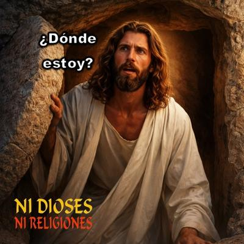

Si hay una creencia que sostiene todo el edificio del cristianismo, es la supuesta resurrección de Jesús. Sin ella, la fe cristiana se desmorona. No lo decimos nosotros, lo dice el propio Pablo de Tarso: «Si Cristo no resucitó, vana es nuestra predicación, vana es vuestra fe» (1 Corintios 15:14). Es decir, todo depende de ese evento extraordinario… que, curiosamente, sólo está documentado en una fuente: los evangelios canónicos. Ningún historiador contemporáneo, ningún registro romano, ningún testigo externo. Nada. Sólo cuatro relatos religiosos, escritos décadas después, por autores anónimos, con claras agendas teológicas.


Y aquí comienza el problema: esos cuatro relatos no coinciden entre sí. Son cuatro historias incompatibles. En efecto, los evangelios de Mateo, Marcos, Lucas y Juan —supuestamente la base más sólida sobre la vida de Jesús— ofrecen versiones distintas de un evento que debería ser inequívoco. ¿Quién fue al sepulcro? ¿Cuántas mujeres estuvieron allí? ¿Había uno o dos ángeles? ¿Estaban dentro o fuera? ¿Jesús apareció primero en Galilea o en Jerusalén?
Las diferencias no son detalles menores: son contradicciones estructurales. Basta comparar Mateo 28:1-10, Marcos 16:1-8, Lucas 24:1-12, Juan 20:1-10, para ver que cada autor construye su propia narrativa, adaptada a sus intereses teológicos. Y esto resulta aún más problemático si consideramos que los evangelios sinópticos (Mateo, Marcos y Lucas) comparten fuentes, e incluso se copian entre sí. Y ni siquiera copiando logran ponerse de acuerdo.
Si el caso se sometiera a un juicio moderno, estos testimonios serían descartados por inconsistentes. Para colmo el evangelio más antiguo, el de Marcos, deja en evidencia lo artificial de toda esta historia. En su versión original, el texto termina abruptamente en Marcos 16:8: las mujeres encuentran la tumba vacía, sienten miedo… y no dicen nada a nadie. Fin. No hay apariciones de Jesús resucitado. No hay gloria, ni hay triunfo.
Sin embargo, apareció después el añadido conocido como «final largo» (Marcos 16:9–20), que incluye apariciones de Jesús resucitado, la gran comisión («id por todo el mundo»), y una serie de señales dignas de un espectáculo de magia: expulsar demonios, hablar en lenguas, tomar serpientes venenosas con las manos y beber sustancias mortales sin sufrir daño. Culminando todo con la ascensión de Jesús al cielo, donde se sienta a la derecha de «Dios».
Es decir, ¡el relato más antiguo no tenía ninguna resurrección de Jesús!… y hubo que añadírsela después. Si esto no mina la credibilidad del texto, ¿qué lo haría?
Pero además están las exageraciones que rozan lo absurdo. Y entre los evangelistas, Mateo se lleva el premio a la imaginación desbordada. Según él, cuando Jesús murió, la tierra tembló, las rocas se partieron y… cadáveres de «santos» resucitaron y caminaron por la ciudad (Mateo 27:51-52).
Un evento así habría sido el equivalente antiguo a un apocalipsis zombi. Sin embargo, ningún historiador de la época —ni judío, ni romano, ni de ninguna otra cultura— menciona absolutamente nada. Silencio total. Al parecer, una multitud de muertos caminando por Jerusalén no fue lo suficientemente relevante para quedar registrado… excepto en uno de los evangelios.
Pero hay otro detalle muy revelador: la reacción de los discípulos. Según los mismos evangelios, nadie esperaba la resurrección. Nadie la celebró. Nadie la anticipó con convicción. En cambio, todos reaccionaron con miedo, confusión y escepticismo. Ni siquiera los propios seguidores de Jesús creyeron que resucitaría, a pesar de habérselos anunciado varias veces (Mateo 16:21, Mateo 17:22-23, Mateo 20:18-19, Marcos 8:31, Lucas 9:22).
Porque, si ellos lo creían, ¿por qué no se fueron frente a la tumba a esperar el gran acontecimiento, como fans en el estreno de una película? —La respuesta parece simple: sus pensamientos irracionales no llegaban a tal extremo.
Pero hay otro detalle muy importante: había rumores de fraude desde el principio. El propio evangelio de Mateo reconoce que ya en esa época circulaba una explicación alternativa: que los discípulos robaron el cuerpo. De hecho, menciona que las autoridades temían precisamente eso (Mateo 27:62-64), y luego admite que esa versión «se divulgó entre los judíos hasta el día de hoy» (Mateo 28:15). Es decir, incluso dentro del texto bíblico se reconoce que la historia de la resurrección no era la única explicación, y que había sospechas de fraude desde el principio.
Pero por supuesto, el punto más débil de todos es que nadie vio la famosa resurrección. No hay ningún testigo de ese momento trascendental en que Jesús «volvió a la vida». Lo único que se reporta es que el cadáver no estaba, y a partir de eso, se concluye que resucitó.
En cualquier contexto racional —especialmente en una investigación forense— la desaparición de un cuerpo abre múltiples hipótesis: traslado, robo, error de ubicación, manipulación. Pero en este caso tan importante, la conclusión automática de todos fue la más extraordinaria posible: una violación total de las leyes biológicas y físicas. Es como si hoy desapareciera un cadáver de una morgue y alguien dijera: «Esto es prueba inequívoca de que resucitó». Ningún detective serio consideraría eso.
O sea, el problema de fondo es que todo lo relacionado con la resurrección, el hecho más fundamental del cristianismo, se basa sólo en la fe emocional, no en evidencia. Por tanto, el cristianismo está dependiendo de un evento que:
Sólo está documentado en textos religiosos tardíos.
Presenta contradicciones internas evidentes.
Fue modificado posteriormente para hacerlo más convincente.
Incluye exageraciones sin respaldo histórico (y menos científico).
Fue cuestionado incluso en su propia época.
Y se basa en una deducción ilógica a partir de una tumba vacía.
Pero aun así, miles de millones lo aceptan como un hecho histórico. No por evidencia, sino por necesidad emocional, tradición cultural y presión social. Porque creer en la resurrección de Jesús no es el resultado de un análisis crítico, sino de un acto de fe que ignora activamente todas las inconsistencias.
Al final, la resurrección de Jesús no es un hecho comprobado: es sólo una narrativa construida, editada, adornada y defendida durante siglos. Y como toda narrativa extraordinaria sin evidencia sólida, se sostiene no por su veracidad, sino por la voluntad de creer en ella.
[Godless Freeman]
Comentarios
Comments powered by Disqus